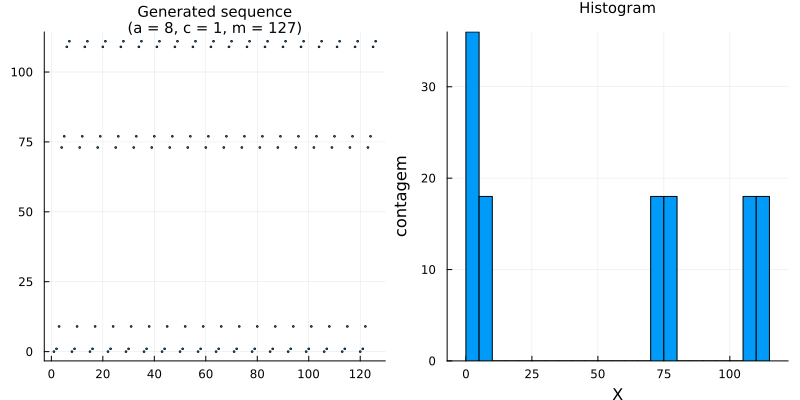
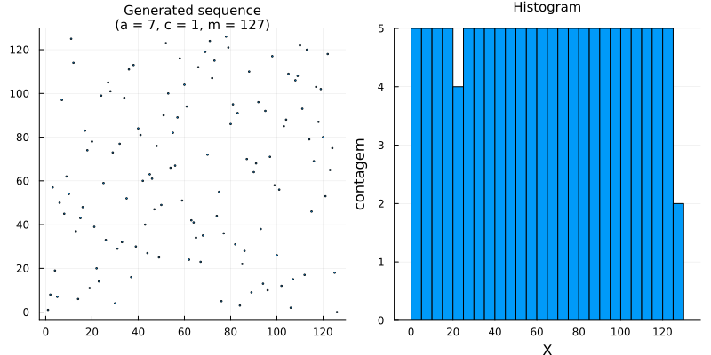
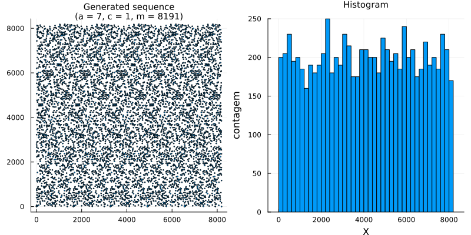

Pseudo random number generators (PRNGs)
A fundamental task in probability programming is the generation of seemingly random numbers. The starting point is that of a uniform distribution. This is not a trivial problem, though. John von Neumann apparently once said the following
"Any one who considers arithmetical means of producing random digits is, of course, in a state of sin." - John von Neumann (quoted by D. E. Knuth, in "The Art of Computer Programming II", Addison-Wesley Longman Publishing Co. 1997)
It is possible, however, to generate, in a computer, truly random numbers, by measuring external physical phenomena, such as thermal noise, sound noise, atmospheric turbulence, photo-eletric effects, quantum effects, amongst others. See, for instance, Wikipedia: Hardware random number generator and RANDOM.ORG. Truly random numbers are fundamental in some applications where security is critical, and this class of generators are termed TRNG (True Random Number Generators). But generating such numbers is quite costly and slow. Because of that, not-so-random numbers are generated instead.
Most computer-generated sequences of random numbers are based on deterministic algorithms, which are termed PRNG (Pseudo Random Number Generators). They generate deterministic sequences of numbers having a nearly uniform distribution and an aparent independence between draws. The first number in the sequence may be changed according to a given seed, which is then the only possible source of actual randomness.
In somewhat critical situations, at least the seed may be chosen truly random, from some external source of entropy from the operating system, such as mouse movement, keys pressed, cpu temperature fluctuations, etc. In less critical cases, though, the generating of pseudo random numbers is sufficient.
In any case, the study of PRNG algorithms forms an important research topic and it is still an active area of research. Many randomness tests are available to check the strong and weak points of many algorithms.
Geradores Congruentes Lineares
For illustrative purposes, a simple family of methods that are easy to implement is that of linear congruencial generators (LCGs). It is a family parametrized by three parameters: a multiplier $a,$ an increment $c,$ and a modulus $m.$ Then, given a certain non-negative integer seed $X_0,$ one generates a sequence $(X_n)_{n\in \mathbb{N}}$ according to the rule
\[ X_{n+1} = (a X_n + c) \operatorname{mod} m.\]
The sequence is, necessarily, periodic and generates at most $m-1$ different numbers, but the periodicity may be smaller than that, depending on the combination of parameters. Because of that $m$ needs to be large, and $a,$ $c,$ and $m$ are chosen with no direct simple relation between them.
Compare, for instance, the two cases below
For a longer sequence, we need to increase the modulus.
Other algorithms
Many other families exist, such as permuted congruential generators (PCGs), Mersenne-Twister, and Xorshift, of which the Xoshiro256 is a popular choice.